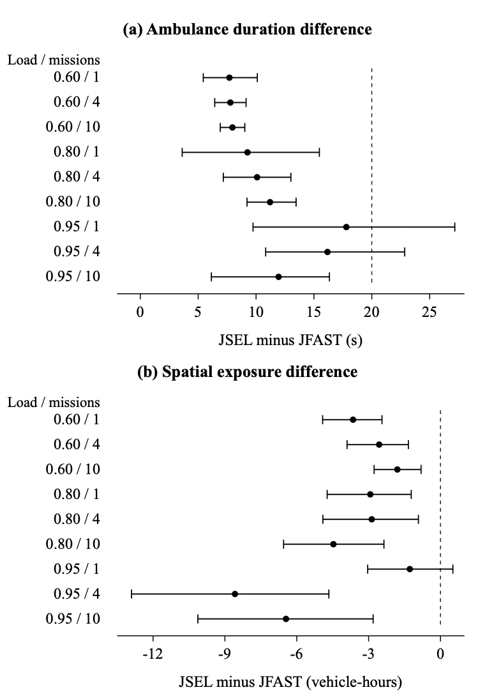
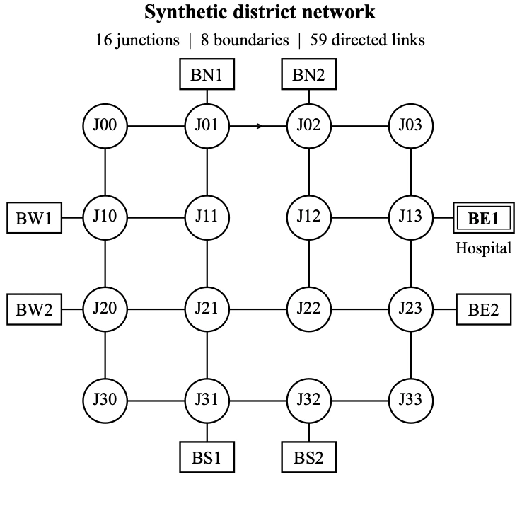

AmbuGo
System architecture
AmbuGo jointly selects an ambulance’s route and the traffic-signal changes along it. This accounts for a key constraint: clearing one junction can move congestion onto the road ahead.
I designed the integration around existing ANPR cameras and authorised signal-controller connections. Vehicle detections inform traffic estimates, avoiding a separate roadside sensor network.
Priority requests
Connected · observations 1.2 s ago| Mission / junction | Requested change | Checks | Decision |
|---|---|---|---|
| AG-014 · Phase 7East approach · ETA 19 s | Extend green8 s requested | Clearance satisfiedReceiving space available | Ready |
| AG-018 · Sector 61North approach · ETA 31 s | Advance phaseNext compatible transition | Clearance remaining3 s before transition | Waiting |
| AG-022 · Phase 9West approach · ETA 24 s | Green extension6 s requested | Downstream occupiedIllustrative occupancy: 92% | Held |
| AG-014 · Sector 62Next corridor junction | Retain current plan | Progress within allowance | Baseline |
12:04:18 Request received · 12:04:19 Constraints checked · 12:04:19 Awaiting controller acknowledgement
Receiving hospital · route updates follow observed progress.
- Observe current trafficUse ambulance telemetry and available traffic counts.
- Compare route–priority choicesScore travel time and traffic burden together.
- Request a feasible interventionCheck signal phases and downstream receiving space.
- Measure progress & repeatEscalate priority when observed movement falls behind.
Control policy and driver override
The controller searches route–signal combinations for the least traffic disruption within a predicted arrival-time allowance. Each request must respect minimum green times, clearance intervals, and downstream road capacity. If the arrival-time allowance can be met without intervention, the current signal plan is retained.
The controller monitors actual ambulance progress and escalates priority when delays accumulate. At the highest tested traffic load, progress-based escalation shortened mean journeys by 38.82 seconds compared with the same controller without this feedback.
A driver-override button lets the ambulance driver choose an alternative route when local conditions make the suggested route unsuitable. The system updates the route and its associated signal-priority requests, while retaining phase-transition and downstream-capacity checks.


Simulation evaluation
- Experimental scale: 14,400 mesoscopic policy runs and 1,728 held-out microscopic policy runs in Eclipse SUMO, with vehicle following, lane changes, finite road capacity, and imperfect traffic observations.
- Matched comparisons: controllers faced the same traffic demand and observation errors. Paired seed-block bootstraps over 48 evaluation seeds quantified uncertainty.
- Consistent accounting: vehicles waiting to enter and unfinished trips remained in the measured population; aggregate counts were checked against individual trip records.
Selective priority retained about 94% of aggressive control’s ambulance-time saving. Mean journey time fell from 401.57 seconds with routing alone to 222.29 seconds with selective control; aggressive control achieved 211.19 seconds. Compared with aggressive control, selective priority added 11.10 seconds (95% interval: 9.47–12.94), but reduced excess road occupancy by 3.84 vehicle-hours (95% interval: 2.95–4.73).
Traffic measures and simulation network
Excess road occupancy accumulates local increases in moving and stopped vehicles over time relative to routing alone. Ordinary-vehicle residence includes waiting before network entry; individual residence increases identify which travellers take longer. All measures follow the same desired-trip population.

Field deployment
The field programme was evaluated separately from simulation. A 31-intersection Punjab pilot recorded approximately 32% lower emergency response time. Phase 1 began in August 2026 across 121 intersections, supporting roughly 700 ambulance movements daily.